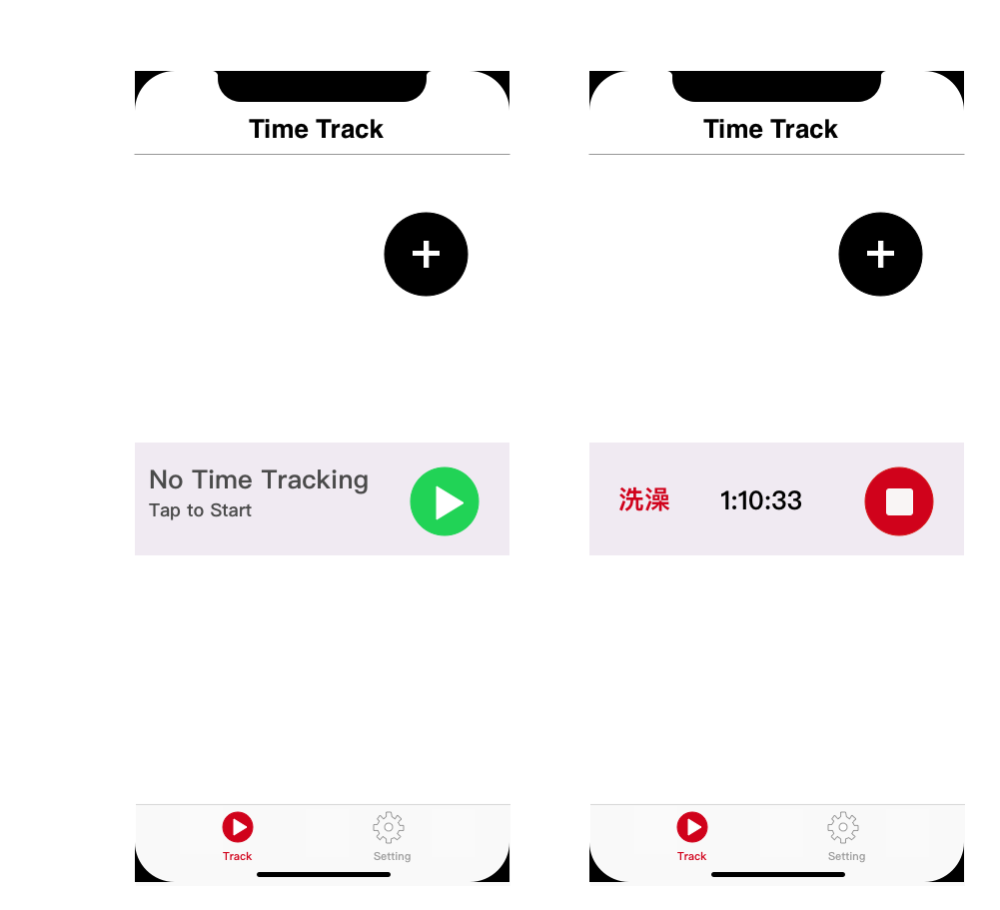
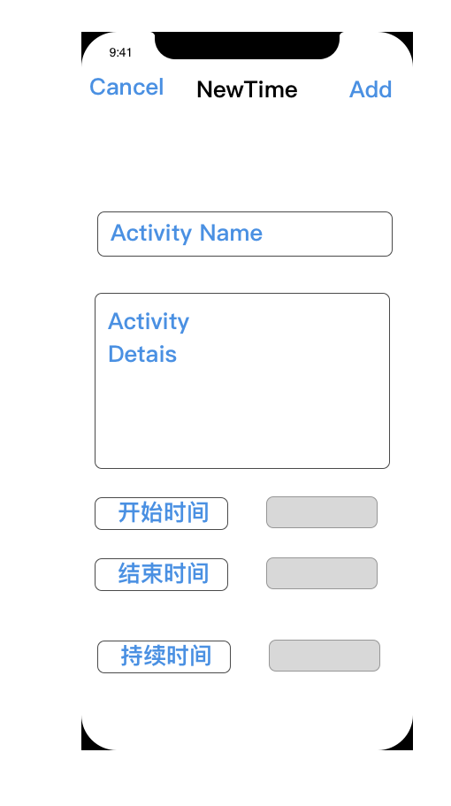
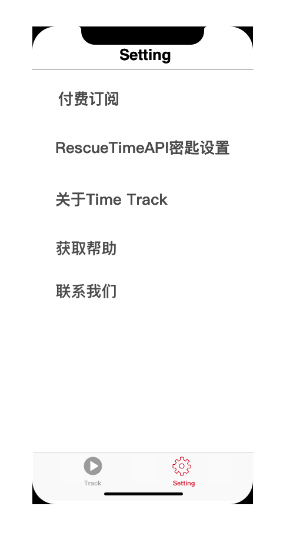
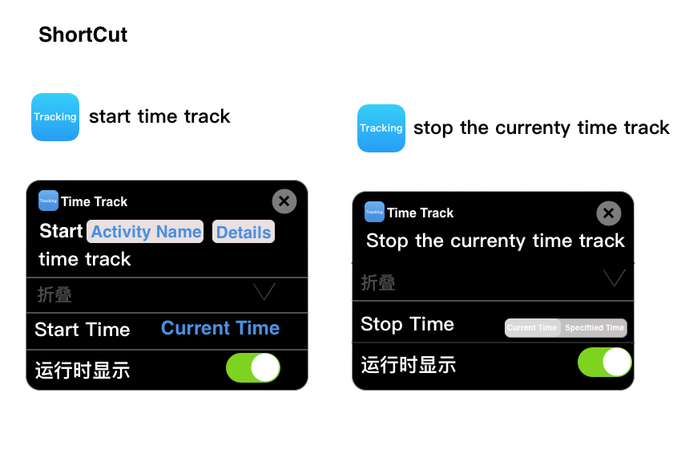

Time Ttrack 开发文档
原型设计与思路分析

这里对接FocusTime Trigger API和FocusTime Feed API的文档。处理好逻辑交互。

这里对接FocusTime Trigger API和FocusTime Feed API的文档。处理好逻辑交互。

这里是参数设定与帮助。
ios 快捷指令开发设计

这里用到苹果SiriKit框架 这里对接的是离线时间POST API的文档 参考项目 官网参考工程例子
服务端API说明文档
FocusTime Trigger API的文档
FocusTime Trigger API使您可以在活动设备上启动/结束FocusTime，这是从桌面应用程序手动启动/结束它的替代方法。这对于从第三方应用程序自动化FocusTime很有用。一个示例是在一天中的特定时间开始/结束FocusTime。
服务访问
到达FocusTime触发器API的基本URL为：
对于使用API密钥的连接：
https://www.rescuetime.com/anapi/start_focustime
https://www.rescuetime.com/anapi/end_focustime
必要参数
key #[您的API密钥]
duration #一个整数，以分钟为单位表示FocusTime会话的长度，并且必须是5的倍数（ 5、10、15、20 ...）。可以传递-1值来启动FocusTime，直到一天结束。
注意：end_focustime端点不需要此参数。
FocusTime Feed API的文档
FocusTime Feed API是最近触发的开始/结束的FocusTime会话的运行日志。每当新的FocusTime会话开始/结束时，这对于执行第三方应用程序交互非常有用。FocusTime是一项高级功能，因此，对于RescueTime Lite计划的用户， API始终将返回零结果。
服务访问
到达FocusTime Feed API的基本URL是：
https://www.rescuetime.com/anapi/focustime_started_feed
https://www.rescuetime.com/anapi/focustime_ended_feed
必要参数
key -[您的API密钥]
输出格式 FocusTime Feed API返回一个JSON对象数组，这些数组按相反的时间顺序表示FocusTime的开始/结束事件。每个对象都具有以下结构：
{
'id': float (A UNIX timestamp that represents a unique id for the event),
'duration': integer (The initial length of time in minutes for the FocusTime Session, focustime_started_feed only),
'created_at': datetime (The time, in user’s selected time zone, that the session was started)
}
查询示例 要请求最近的FocusTime启动事件的列表： https://www.rescuetime.com/anapi/focustime_started_feed?key=YOUR_API_KEY
离线时间POST API的文档
使用离线时间发布API，可以以编程方式发布离线时间，以替代在RescueTime.com上手动输入离线时间。这对于从其他系统捕获信息很有用。例如，在日历应用程序上开会后添加离线时间，或根据位置数据记录行车时间。
服务访问
到达离线时间POST API的基本URL是：
对于使用API密钥的连接： https://www.rescuetime.com/anapi/offline_time_post
必需的QUERY参数
key #您的API密钥
start_time #表示脱机时间块开始日期/时间的字符串。该格式应为“ YYYY-MM-DD HH：MM：SS”，但是unix时间戳也是可以接受的。
end_time/duration #表示脱机时间块结束日期/时间的字符串，或者表示脱机时间块持续时间（以分钟为单位）的整数。
activity_name #255个字符或更短的字符串，其中包含将作为活动名称输入的文本（例如，“会议”，“驾驶”，“睡觉”等）。
activity_details #255个字符或更短的字符串，其中包含将作为指定活动的详细信息输入的文本。
输出格式
成功的帖子将以状态码200返回。如果有错误，将返回状态码400。
示例请求
要发布离线时间有关会议刚刚结束： 一个POST请求发送到以下网址：
https://www.rescuetime.com/anapi/offline_time_post?key=YOUR_API_KEY
JSON主体为：
{
"start_time": "2020-01-01 09:00:00",
"duration": 60,
"activity_name": "Meeting",
"activity_details": "Daily Planning"
}